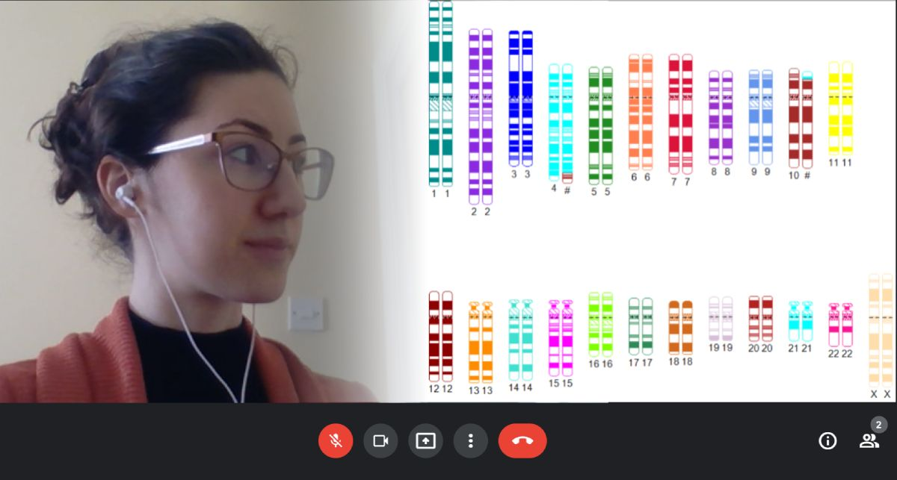

Book your appointment today so I can help you better understand your results
BOOK APPTSummary of my professional career
My name is Marcela Hanna (she/her), I am a Brazilian Genetic Counsellor currently working in Europe and providing online Genetic Counselling.
I studied in Brazil, graduating first in Biological Sciences, followed by a Master's degree in Health Sciences from the University of Brasília (UnB). Then, I got a second Master's degree, specifically in Genetic Counseling and Human Genomics, from the University of São Paulo (USP). I’m a Specialist in Genetics and Molecular Biology by the Regional Biology Council of the 4th Region in Brazil.
I have academic, laboratory and clinical experience in Human Genetics and Assisted Human Reproduction. I decided to specialize in Genetic Counseling because it is an area that combines knowledge in Genetics and in Psychology. I like having contact with patients, being able to explain difficult concepts in a simpler way and seeing my knowledge helping people directly.
I am currently working full-time and living in Europe so my appointment times are relatively limited, but feel free to email me if you would like to book an appointment at a different time and I can try to accommodate you.
Here you will find answers to the most frequently asked questions. If your question is not listed, feel free to contact me by email
In simple terms: it's explaining things about genetic diseases and the risk to children and family members. For example: Down syndrome is a genetic disease caused by the inheritance of an entire extra chromosome. In most cases, the risk of having another child with Down syndrome is very low, but there is a test called a karyotype that can help better calculate the risk. Some of the most common symptoms of Down syndrome are facial features, intellectual disability and heart malformations.
1. Book the appointment: Just pick a date and book your appointment using the calendar. You can check an available date at least 7 days in advance. There, you can provide some details, such as the reason for the consultation and whether you have already had a genetic test, so that I can get an idea of the case and how I could assist you.
2. Pay for the appointment: I will send you my details to pay for the consultation and send you a link to the meeting. My email address is aconselhamentogenetico8@gmail.com. You have up to 48 hours before the appointment to make the payment in order to confirm your appointment.
3. Join the meeting on the date: Open your email and click the link to join the meeting: The consultation consists of a 45 minute video conversation, where I’ll answer your questions. I recommend joining through a computer or tablet, so that you can see images or drawings, as I usually share my screen to explain things in a more didactic way.
45 minutes.
50 euros, which can be paid through PayPal or bank transfer.
Through PayPal or bank transfer.
No, but I can explain about the tests, recommend the best one and interpret results. You will have to check the procedures to get tested, depending on your country.
No, because I’m not being paid to advertise other services.
You can book an appointment now and I can answer your questions about various things related to genetics, including available tests and whether it is worth ordering a genetic test or not. Depending on the case, you will not need to take any tests, and you will be able to get an idea of your risk of developing cancer or having children with a genetic disease based on the health history of the rest of your family. Furthermore, we can discuss the tests that exist now and which you may decide to do in the future, as tests are becoming increasingly cheaper. The first step is to gather information about your family, then book an appointment to ask your questions, and you will decide when/if the test is worth it for you.
I recommend that you have information about your family, depending on the reason for your visit. For example, if you have had recurrent miscarriages, it would be good to know if your parents/grandparents/siblings also had them. If you want to know about cancer risk because your aunt had breast cancer, it would be good to know the age at which she was diagnosed, the type of cancer, if there are other people in the family who have had cancer, etc.
Yes! I am always trying to learn and improve my service, and one of my professional goals is that LGBTQIA+ patients do not feel uncomfortable during consultations or avoid taking care of their health. I want to encourage people in general to take care of their health and for them to have access to information.
No, I’m currently not registered with any Boards, but that doesn't mean I'm not qualified. Because I graduated from a University in Brazil, the route for registration isn’t as straightforward as it is for students who graduated from accredited courses in those countries. Depending on the course you completed, Genetic Counselors still have to work for a few years (between 2-5 years) and build a case log, and maybe sit an exam, before getting certified. When I do get certified, it’s going to be through the EBMG, since I’m working in Europe, not in the US/Canada. You can read more about EBMG’s registration routes here.
Yes, I speak Portuguese and a bit of French.
You can send me an email at aconselhamentogenetico8@gmail.com.
With my expertise, I can: